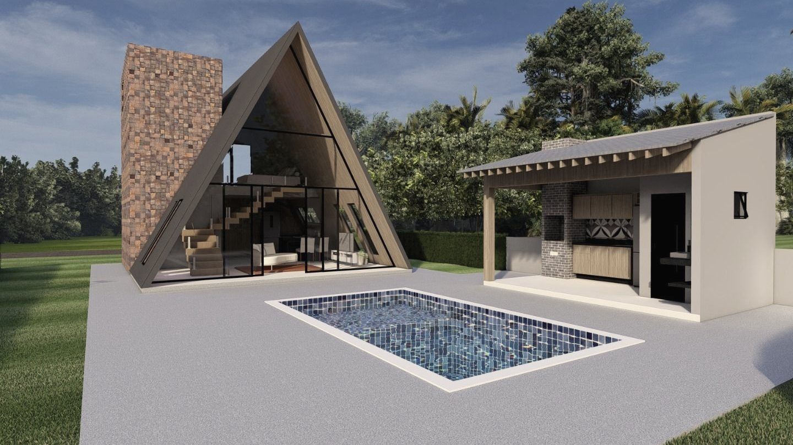

blog / steel frame
Steel frame é mais caro? Depende da conta.
Na planilha, costuma ser. Quem compara só o custo direto costuma parar na alvenaria. Prazo, repetição e imposto mudam o resultado.

Resposta curta
No custo direto, o steel frame costuma sair acima da alvenaria. A diferença cai, e pode se inverter, quando entram o prazo de obra, a repetição do projeto e o INSS.
O que fica fora da planilha
Obra mais curta custa menos em canteiro e em aluguel. Projeto resolvido no desenho vira previsibilidade. E o imposto da obra costuma ficar fora da comparação.
Como comparar
Compare a casa pronta, com o mesmo acabamento, o prazo em reais e o INSS nos dois cenários.
Fontes
- Instrução Normativa RFB nº 2.021, de 2021